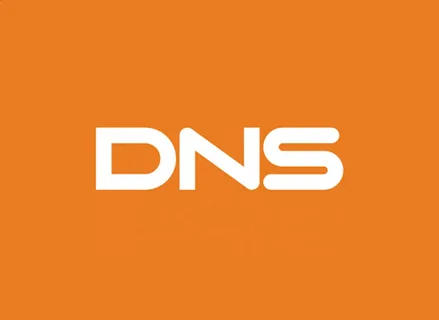
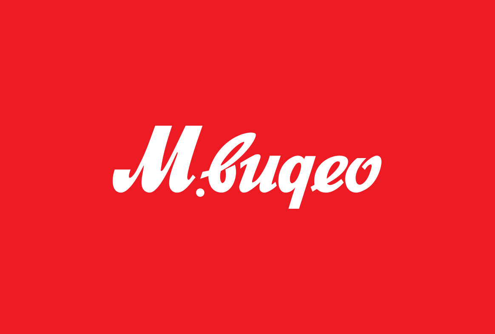

Ответы на популярные вопросы
Где искать?
Найти комплектующие вы сможете в любом из крупных сетевых магазинов. Ссылки на наиболее популярные из них представлены ниже на странице. В каждом есть большой выбор всех необходимых комплектующих а также гарантия.
Что сейчас происходит с ценами?
В течение октября 2022 года средние цены на комплектующие для компьютеров снизились на 18–37% по сравнению с июнем, рассказали «Известиям» в пресс-службе Ozon. Существеннее всего подешевели видеокарты — на 37%. Это связано с кратным ростом ассортимента графических ускорителей у продавцов и конкуренцией за покупателей, добавили там. Тенденцию подтвердили и другие продавцы. «Видеокарты стали более доступными для массовой аудитории», — согласился руководитель направления продуктовых коммуникаций пресс-службы «М.Видео – Эльдорадо» Андрей Петров.
Где найти инструкцию по сбору ПК?
На ютубе множество видео, где подробно рассказывается как правильно собрать и подключить все компонетнты компьютера.
Чем обусловлено снижение цен на видеокарты?
В России зафиксировано гигантское падение цен на видеокарты, несмотря на уход многих крупных производителей с российского рынка. Как пишет Forbes, это связано, в том числе, с новым алгоритмом добычи криптовалюты Ethereum, который более никак не зависит ни от количества видеокарт в системе, ни от их производительности.
Важен ли производитель комплектующих?
Причина покупки деталей одного бренда и под-бренда, как правило, кроится в кастомизации или покупке готовой фирменной сборке. Но стоит ли это делать специально? Ответ довольно простой – если Вы не гонитесь за внешность, то и заморачиваться не стоит. Покупайте то, что Вам нужнее, не обращая внимание на бренд. Куда лучше вложить деньги в качество. Что касаемо пользователей, желающих собрать не только мощно, но и красиво, то ответ так же прост. Никто не запрещает брать то, что нравится.
Почему выгодно самому собирать компьютер?
Как правило, именно цена – самый волнующий большинство потребителей фактор. В конце концов, они хотят с максимальной выгодой потратить каждую копейку честно заработанных денег. Действительно, стоимость самостоятельной сборки будет ниже, чем готового ПК. Почему? Просто производители компьютеров собирают и тестируют свои продукты, используя людской персонал, и это отражается на себестоимости. Ведь цена продукта должна быть выше, чем стоимость его изготовления, чтобы его было выгодно производить. Если же собирать компьютер самостоятельно, то данную прибавку к стоимости можно вычесть. Вот почему собранный своими руками компьютер будет дешевле готового с такими же техническими характеристиками, даже если последний поставляется с предустановленной операционной системой Windows. Иными словами, за те же деньги вы получите готовый компьютер с более слабой аппаратной конфигурацией. Как говорится, за что заплатишь, то и получишь. Данная разница будет иметь определенный эффект на общую производительность, функциональность и расширяемость компьютерной системы. Что касается конкретной разницы в цене между собранными самостоятельно и готовыми ПК, то она будет минимальной, если сравниваются конфигурации начального уровня стоимостью менее $500. Однако, когда речь идет о компонентах для компьютеров среднего и высшего классов (в одинаковом ценовом диапазоне, но от разных брендов), разница может составлять более $30 за каждый, особенно для материнских плат, видеокарт и модулей памяти. Выбор в пользу компонентов того или иного бренда будет существенно отражаться на итоговой стоимости всей системы.
Как не ошибиться с выбором?
Перед покупкой и сборкой изучите всю информацию по этому вопросу. Сделайте несколько примерных сборок комплектующих, проверьте их совместимость (например, с помощью конструктора DNS). Когда у вас будет несколь вариантов, вы сможете их сравнить и выбрать наиболее подходящий.
Будет ли рост цен?
Если в каком-либо интернет-магазине вы добавите в корзину комплектующие то обнаружите колебания цены в 10-20%. В такой ситуации некоторые начинают думать, когда получить наилучшую цену. Необходимопринять как данность состояние рынка и его волатильность.
Нужен ли сейчас ПК?
Сейчас ноутбуки стали очень популярным решением, и способны заменить ПК во многиз ситуациях. Но каждый сам решает, какой девайс больше ему подходит.
Ссылки на сайты, где вы можете искать комплектующие
DNS
Здесь вы можете найти большинство доступных на рынке комплектующих по доступным ценам, магазины есть в большинстве городов Россиb, поэтому доставка не вызовет проблем
М.Видео
Популярная сеть, которую можно найти в любом городе Россиии. Большой выбор перефирии, комплектующие предствалены меньше. Есть выгодная программа бонусов. Но будьте осторожны, цены иногда завышены.
